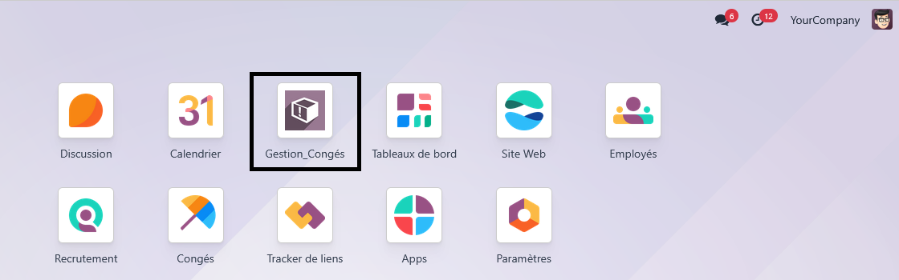
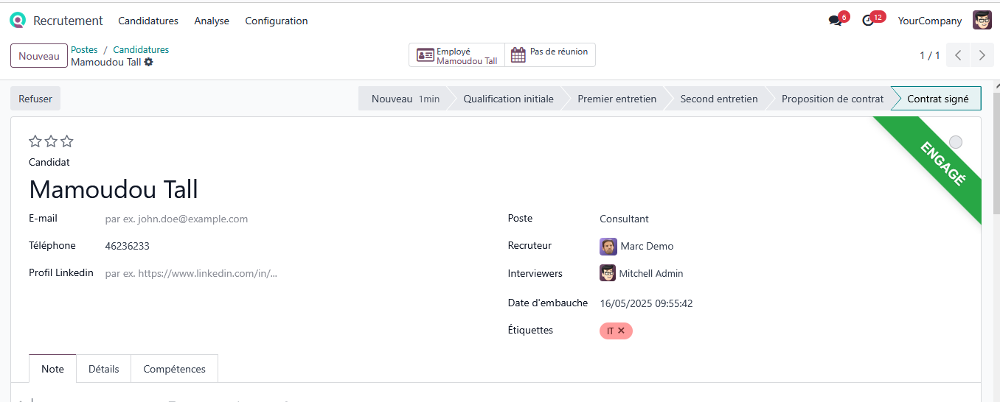
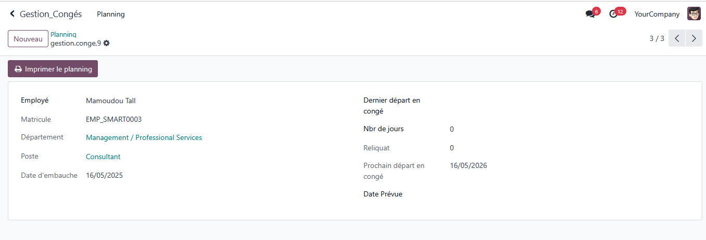
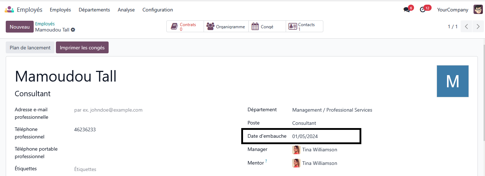
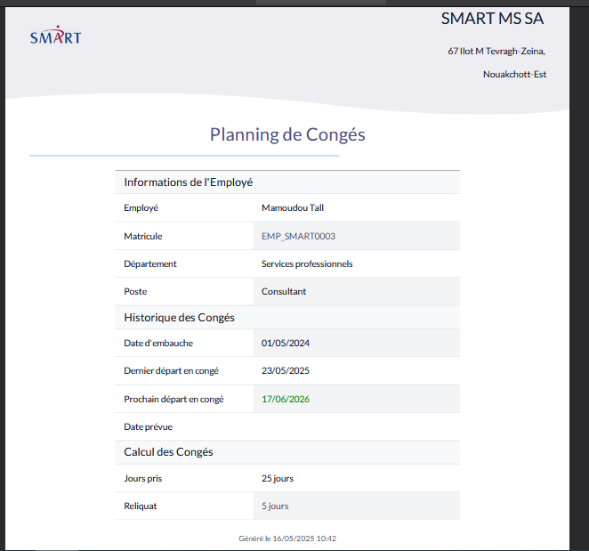
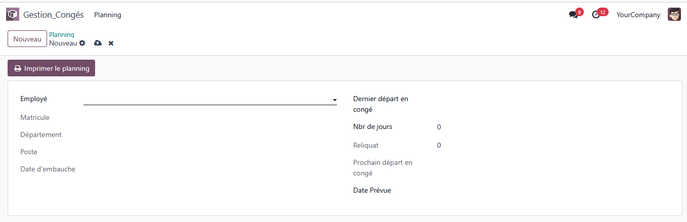
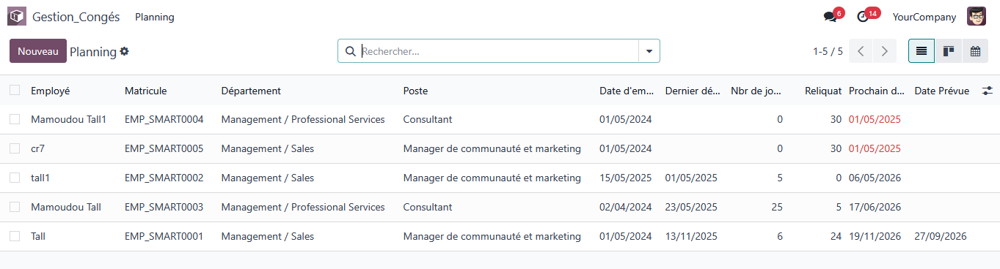

Module de Gestion des Congés
Automatisez la gestion complète des congés, du recrutement à la planification, directement dans Odoo.
Fonctionnalités principales :
- Création automatique d’un employé après signature du contrat. 
- Génération automatique du planning de congés. 
- Mise à jour du champs liés à l’employé (date d’embauche). 
- Calcul du reliquat de congé et du prochain départ en congé.
- Vue liste avec surlignage du mois en cours :
- Cela veut dire mettre en évidence (par une couleur ou une icône) les lignes où la date de début ou de fin est dans le mois actuel. Exemple : Si on est en mai 2025, alors la première ligne de Mamoudou Tall1 serait surlignée (parce que son congé commence en mai). Cela permet à l’utilisateur de repérer rapidement les congés en cours ce mois-ci.
- Impression du planning (rapport PDF) 

Exemples de vues
Vue formulaire
Vue liste
Assistance & Contact
Pour toute demande de personnalisation ou de support :
Email : contact@smartmssa.com